上位机使用入门
1、新建工程
点击新建工程->选择工程路径->填写工程名称
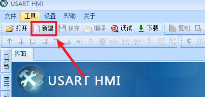
选择型号，例如现在串口屏的型号为TJC4832T135_011R(3.5寸电阻屏)，则选择TJC4832T135_011即可，不需要管它是电容屏电阻屏还是无触摸的屏，都是选择这个型号即可
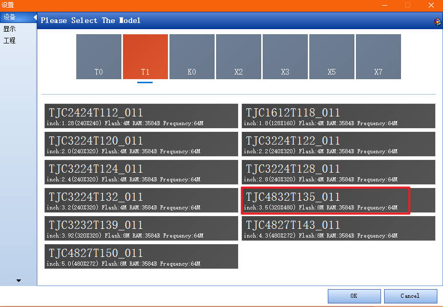
根据需求选择横屏或者竖屏，字符编码需要与单片机的字符编码一致
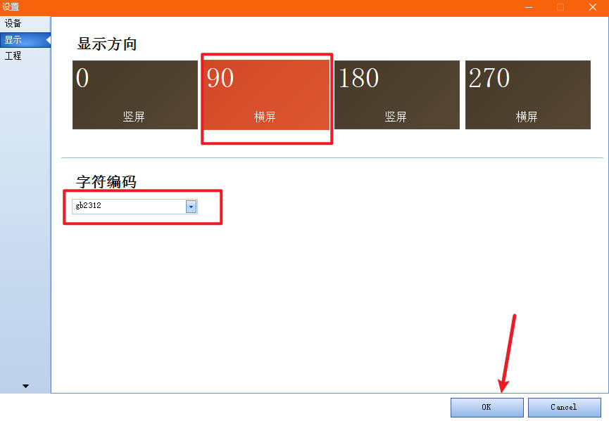
2、文本控件显示数据
点击左侧的文本控件，即可在界面上新建一个文本控件，文本控件的名称为t0
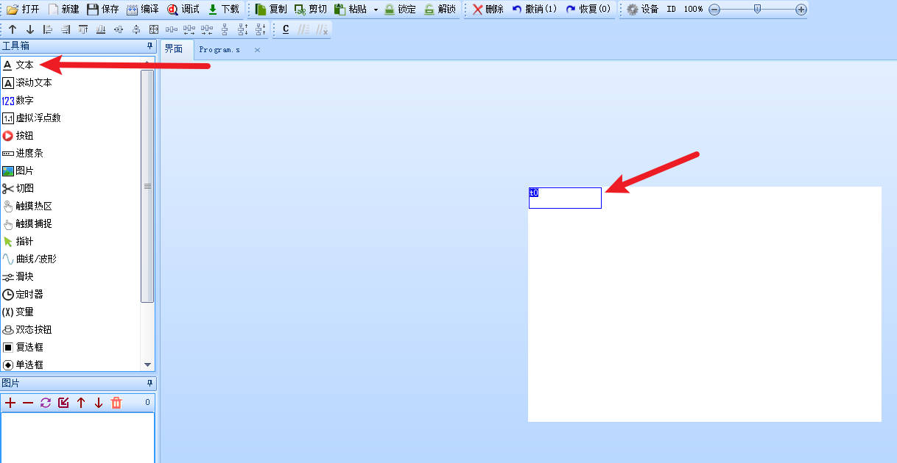
需要创建并导入字库，才能显示文字
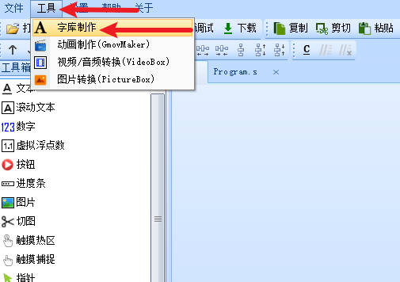
选择对应的字高，编码，字体，字库名称，点击生成字库
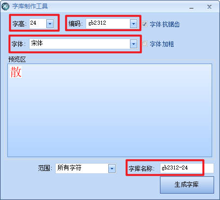
就可以在底部的字库界面看到对应的字库了
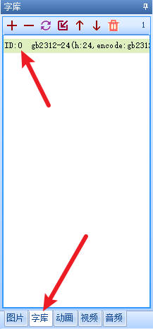
txt属性可以显示文本，修改txt属性可以显示不同的文本
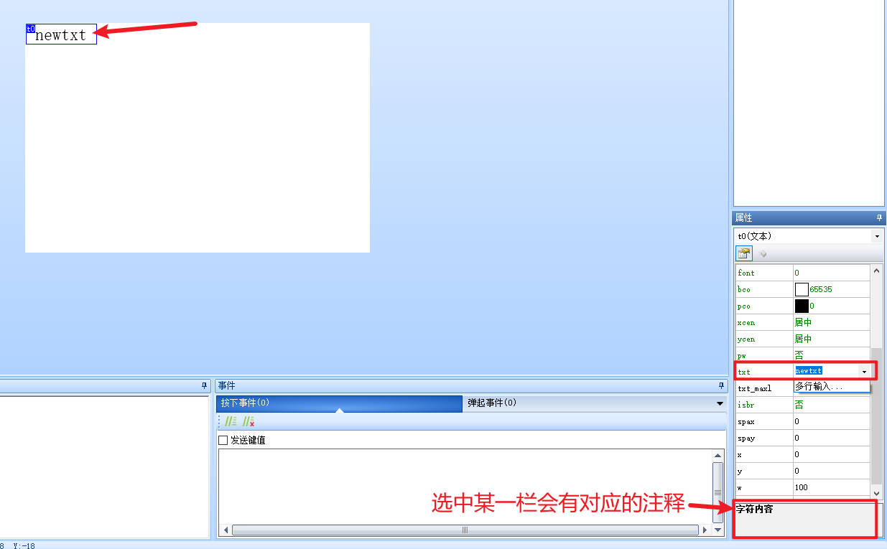
选择控件的属性，可以在底部看到对应的注释
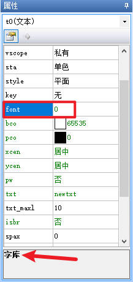
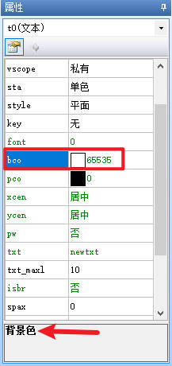
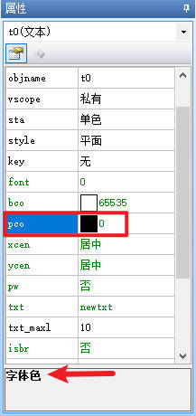
3、动态修改文本
新建一个按钮控件，可以看到控件有“按下事件”和“弹起事件”
按下事件即手指按下屏幕时触发的事件
弹起事件即手指离开屏幕时触发的事件
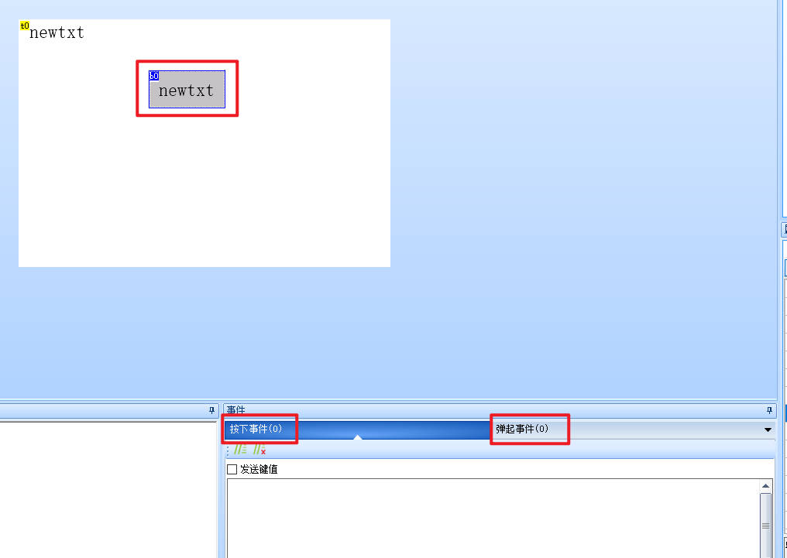
在按下事件中修改文本控件t0显示的文本，注意等号两边不要有空格，否则会报错
t0.txt="123"
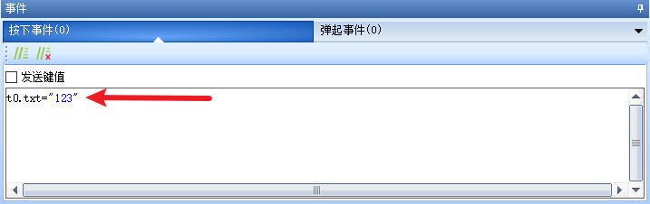
点击调试，即可调用模拟器，在模拟器上点击按钮控件，就能看到文本被修改了
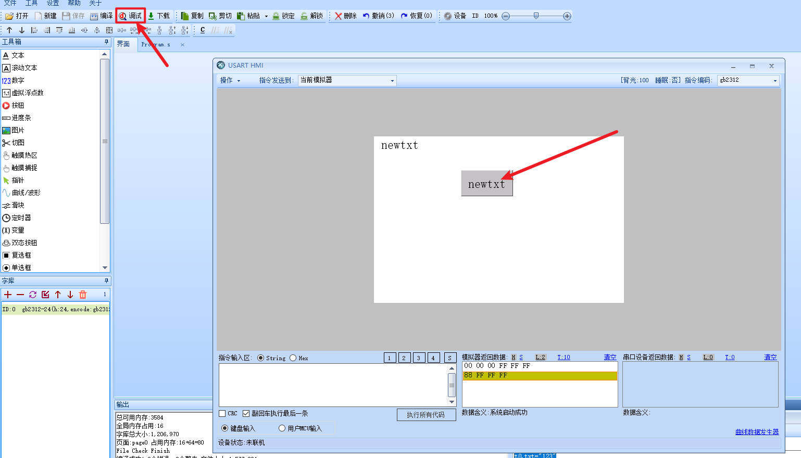
调试界面也可以直接输入指令来控制屏幕上的控件
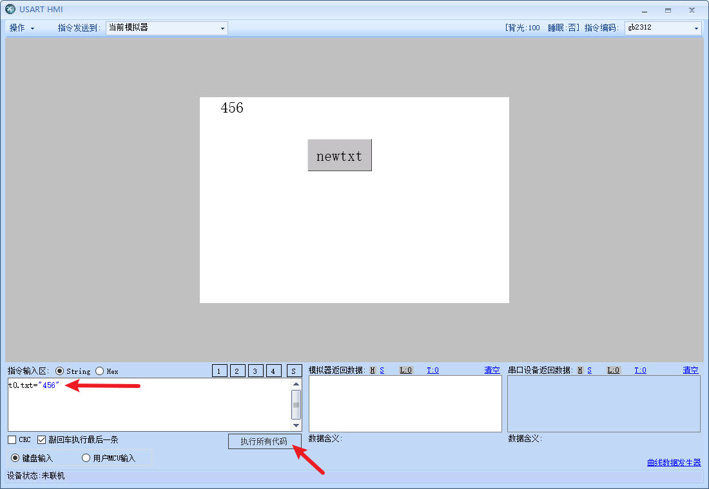
如果数据源来自串口（单片机），也可以选择“用户MCU输入”

4、下载工程
点击“下载”按钮就能下载工程，选择对应的串口号（在设备管理器里查看），波特率直接选择最高的921600即可，点击“联机并开始下载”即可自动下载
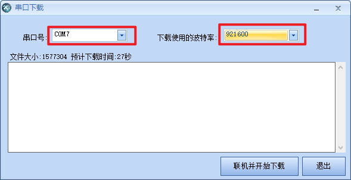
如果提示信息，点击确定即可
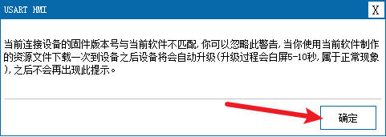
也可以使用sd卡来下载工程，参考 通过SD卡下载工程到串口屏